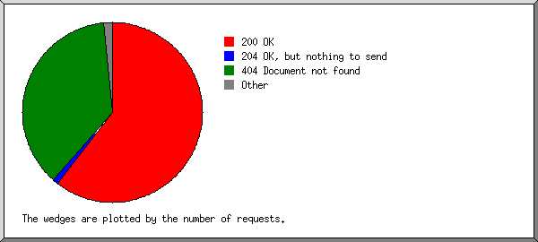

Web Server Statistics for knowledgedr.com
Web Server Statistics for knowledgedr.com
Program started on Mon, Sep 30 2019 at 5:15 AM.
Analyzed requests from Wed, Aug 14 2019 at 5:12 AM to Mon, Sep 30 2019 at 2:50 AM (46.90 days).
Web Server Statistics for knowledgedr.comProgram started on Mon, Sep 30 2019 at 5:15 AM.
Analyzed requests from Wed, Aug 14 2019 at 5:12 AM to Mon, Sep 30 2019 at 2:50 AM (46.90 days).
(Go To: Top | General Summary | Monthly Report | Daily Summary | Hourly Summary | Domain Report | Organization Report | Redirected Referrer Report | Failed Referrer Report | Referring Site Report | Browser Report | Browser Summary | Operating System Report | Status Code Report | File Size Report | File Type Report | Directory Report | Request Report)
Figures in parentheses refer to the 7-day period ending Sep 30 2019 at 5:15 AM.
Successful requests: 1,606 (264)
Average successful requests per day: 34 (37)
Successful requests for pages: 731 (175)
Average successful requests for pages per day: 15 (24)
Failed requests: 1,698 (36)
Redirected requests: 31 (0)
Distinct files requested: 405 (3)
Distinct hosts served: 441 (8)
Data transferred: 11.78 megabytes (3.84 megabytes)
Average data transferred per day: 257.15 kilobytes (561.22 kilobytes)
(Go To: Top | General Summary | Monthly Report | Daily Summary | Hourly Summary | Domain Report | Organization Report | Redirected Referrer Report | Failed Referrer Report | Referring Site Report | Browser Report | Browser Summary | Operating System Report | Status Code Report | File Size Report | File Type Report | Directory Report | Request Report)
Each unit ( ) represents 15 requests for pages or part thereof.
) represents 15 requests for pages or part thereof.
| month | #reqs | #pages | |
|---|---|---|---|
| Aug 2019 | 143 | 143 |   |
| Sep 2019 | 1463 | 588 |  |
Busiest month: Sep 2019 (588 requests for pages).
(Go To: Top | General Summary | Monthly Report | Daily Summary | Hourly Summary | Domain Report | Organization Report | Redirected Referrer Report | Failed Referrer Report | Referring Site Report | Browser Report | Browser Summary | Operating System Report | Status Code Report | File Size Report | File Type Report | Directory Report | Request Report)
Each unit () represents 5 requests for pages or part thereof.
| day | #reqs | #pages | |
|---|---|---|---|
| Sun | 125 | 86 |  |
| Mon | 93 | 68 |  |
| Tue | 66 | 61 | |
| Wed | 827 | 182 | |
| Thu | 173 | 112 | |
| Fri | 140 | 95 | |
| Sat | 182 | 127 | |
(Go To: Top | General Summary | Monthly Report | Daily Summary | Hourly Summary | Domain Report | Organization Report | Redirected Referrer Report | Failed Referrer Report | Referring Site Report | Browser Report | Browser Summary | Operating System Report | Status Code Report | File Size Report | File Type Report | Directory Report | Request Report)
Each unit () represents 3 requests for pages or part thereof.
| hour | #reqs | #pages | |
|---|---|---|---|
| 0 | 36 | 29 | |
| 1 | 39 | 30 | |
| 2 | 38 | 28 | |
| 3 | 54 | 19 | |
| 4 | 15 | 14 | |
| 5 | 37 | 23 | |
| 6 | 13 | 12 | |
| 7 | 32 | 16 | |
| 8 | 44 | 33 | |
| 9 | 121 | 64 | |
| 10 | 40 | 25 | |
| 11 | 31 | 29 | |
| 12 | 25 | 25 | |
| 13 | 24 | 23 | |
| 14 | 50 | 24 | |
| 15 | 322 | 90 | |
| 16 | 26 | 22 | |
| 17 | 295 | 22 | |
| 18 | 121 | 32 | |
| 19 | 53 | 49 | |
| 20 | 90 | 45 | |
| 21 | 20 | 20 | |
| 22 | 47 | 35 | |
| 23 | 33 | 22 | |
(Go To: Top | General Summary | Monthly Report | Daily Summary | Hourly Summary | Domain Report | Organization Report | Redirected Referrer Report | Failed Referrer Report | Referring Site Report | Browser Report | Browser Summary | Operating System Report | Status Code Report | File Size Report | File Type Report | Directory Report | Request Report)
Listing domains, sorted by the amount of traffic.
| #reqs | %bytes | domain |
|---|---|---|
| 1606 | 100% | [unresolved numerical addresses] |
(Go To: Top | General Summary | Monthly Report | Daily Summary | Hourly Summary | Domain Report | Organization Report | Redirected Referrer Report | Failed Referrer Report | Referring Site Report | Browser Report | Browser Summary | Operating System Report | Status Code Report | File Size Report | File Type Report | Directory Report | Request Report)

Listing the top 20 organizations by the number of requests, sorted by the number of requests.
| #reqs | %bytes | organization |
|---|---|---|
| 785 | 26.73% | 97 |
| 186 | 8.18% | 54 |
| 125 | 30.39% | 40 |
| 96 | 9.19% | 66.249 |
| 55 | 4.10% | 106 |
| 37 | 1.18% | 157.55 |
| 34 | 2.51% | 207.46 |
| 30 | 4.12% | 34 |
| 25 | 0.56% | 37 |
| 21 | 1.53% | 163.172 |
| 18 | 0.53% | 104 |
| 16 | 2.34% | 35 |
| 14 | 2.92% | 72 |
| 13 | 0.29% | 93 |
| 11 | 0.74% | 51 |
| 11 | 0.24% | 58 |
| 11 | 0.30% | 5 |
| 9 | 0.19% | 123 |
| 8 | 0.41% | 91 |
| 8 | 184.154 | |
| 93 | 3.56% | [not listed: 53 organizations] |
(Go To: Top | General Summary | Monthly Report | Daily Summary | Hourly Summary | Domain Report | Organization Report | Redirected Referrer Report | Failed Referrer Report | Referring Site Report | Browser Report | Browser Summary | Operating System Report | Status Code Report | File Size Report | File Type Report | Directory Report | Request Report)

Listing referring URLs, sorted by the number of redirected requests.
(Go To: Top | General Summary | Monthly Report | Daily Summary | Hourly Summary | Domain Report | Organization Report | Redirected Referrer Report | Failed Referrer Report | Referring Site Report | Browser Report | Browser Summary | Operating System Report | Status Code Report | File Size Report | File Type Report | Directory Report | Request Report)
Listing the top 30 referring URLs by the number of failed requests, sorted by the number of failed requests.
(Go To: Top | General Summary | Monthly Report | Daily Summary | Hourly Summary | Domain Report | Organization Report | Redirected Referrer Report | Failed Referrer Report | Referring Site Report | Browser Report | Browser Summary | Operating System Report | Status Code Report | File Size Report | File Type Report | Directory Report | Request Report)

Listing referring sites, sorted by the number of requests.
| #reqs | site |
|---|---|
| 782 | http://www.knowledgedr.com/ |
| 103 | http://knowledgedr.com/ |
| 2 | https://www.baidu.com/ |
| 1 | https://brandnewblogs.com/ |
| 1 | http://www.xpzb.net/ |
| 1 | http://datadepths.com/ |
(Go To: Top | General Summary | Monthly Report | Daily Summary | Hourly Summary | Domain Report | Organization Report | Redirected Referrer Report | Failed Referrer Report | Referring Site Report | Browser Report | Browser Summary | Operating System Report | Status Code Report | File Size Report | File Type Report | Directory Report | Request Report)
Listing the top 40 browsers by the number of requests for pages, sorted by the number of requests for pages.
| #reqs | #pages | browser |
|---|---|---|
| 158 | 141 | Mozilla/5.0 (compatible; AhrefsBot/6.1; +http://ahrefs.com/robot/) |
| 755 | 124 | Mozilla/5.0 (Macintosh; Intel Mac OS X 10_14_4) AppleWebKit/605.1.15 (KHTML, like Gecko) Version/12.1 Safari/605.1.15 |
| 104 | 90 | Mozilla/5.0 (compatible; bingbot/2.0; +http://www.bing.com/bingbot.htm) |
| 50 | 50 | Mozilla/4.0 (compatible; MSIE 6.0; Windows NT 5.1; SV1) |
| 48 | 48 | Mozilla/5.0 (compatible; hrankbot/1.0; +https://www.hrank.com/bot) |
| 44 | 44 | Mozilla/5.0 (compatible; YandexBot/3.0; +http://yandex.com/bots) |
| 36 | 36 | Sogou web spider/4.0(+http://www.sogou.com/docs/help/webmasters.htm#07) |
| 62 | 31 | Mozilla/5.0 (Linux; Android 6.0.1; Nexus 5X Build/MMB29P) AppleWebKit/537.36 (KHTML, like Gecko) Chrome/41.0.2272.96 Mobile Safari/537.36 (compatible; Googlebot/2.1; +http://www.google.com/bot.html) |
| 30 | 30 | Go-http-client/1.1 |
| 19 | 19 | Mozilla/5.0 (Macintosh; Intel Mac OS X 10_13_0) AppleWebKit/537.36 (KHTML, like Gecko) Chrome/66.0.3359.139 Safari/537.36 |
| 13 | 13 | Mozilla/5.0 (compatible; Googlebot/2.1; +http://www.google.com/bot.html) |
| 4 | 4 | Mozilla/5.0 (Macintosh; Intel Mac OS X 10_12_5) AppleWebKit/537.36 (KHTML, like Gecko) Chrome/58.0.3029.110 Safari/537.36 |
| 3 | 3 | Mozilla/5.0 (compatible; Qwantify/Bleriot/1.1; +https://help.qwant.com/bot) |
| 29 | 3 | Mozilla/5.0 (Macintosh; Intel Mac OS X 10.14; rv:69.0) Gecko/20100101 Firefox/69.0 |
| 3 | 3 | Mozilla/5.0 (compatible; Baiduspider/2.0; +http://www.baidu.com/search/spider.html) |
| 3 | 3 | Mozilla/5.0 (Macintosh; Intel Mac OS X 10_8_3) AppleWebKit/537.31 (KHTML, like Gecko) Chrome/26.0.1410.65 Safari/537.31 |
| 3 | 3 | Mozilla/5.0 (Windows; U; Windows NT 5.1; en-US; rv:1.9.1.6) Gecko/20091201 Firefox/3.5.6 (.NET CLR 2.0.50727; .NET CLR 3.0.4506.2152; .NET CLR 3.5.30729) |
| 3 | 3 | Mozilla/5.0 (Windows NT 10.0; Win64; x64) AppleWebKit/537.36 (KHTML, like Gecko) Chrome/74.0.3729.131 Safari/537.36 |
| 2 | 2 | Mozilla/5.0 (Windows NT 6.1; WOW64; rv:18.0) Gecko/20100101 Firefox/18.0 |
| 2 | 2 | Mozilla/5.0 (Windows NT 6.1; Win64; x64; rv:59.0) Gecko/20100101 Firefox/59.0 |
| 2 | 2 | Mozilla/5.0 (iPhone; CPU iPhone OS 10_2_1 like Mac OS X) AppleWebKit/602.4.6 (KHTML, like Gecko) Version/10.0 Mobile/14D27 Safari/602.1 |
| 2 | 2 | Xenu Link Sleuth/1.3.8 |
| 2 | 2 | Mozilla/5.0 (Windows NT 10.0; Win64; x64; rv:68.0) Gecko/20100101 Firefox/68.0 |
| 2 | 2 | Mozilla/5.0 (Windows NT 10.0; Win64; x64) AppleWebKit/537.36 (KHTML, like Gecko) Chrome/58.0.3029.110 Safari/537.36 Edge/16.16299 |
| 5 | 2 | Opera/9.80 (Windows NT 6.2; Win64; x64) Presto/2.12.388 Version/12.17 |
| 2 | 2 | Mozilla/5.0 (Windows NT 6.1; WOW64; Trident/7.0; rv:11.0) like Gecko |
| 2 | 2 | Mozilla/5.0 (X11; Linux i686 on x86_64; rv:46.0) Gecko/20100101 Firefox/46.0 |
| 2 | 2 | Mozilla/5.0 (Windows NT 6.0) AppleWebKit/535.1 (KHTML, like Gecko) Chrome/13.0.782.112 Safari/535.1 |
| 2 | 2 | Mozilla/5.0 (Macintosh; Intel Mac OS X 10.10; rv:59.0) Gecko/20100101 Firefox/59.0 |
| 25 | 2 | Mozilla/5.0 (Windows NT 6.1; WOW64) AppleWebKit/538.1 (KHTML, like Gecko) PhantomJS/2.1.1 Safari/538.1 |
| 1 | 1 | Mozilla/5.0 (Macintosh; Intel Mac OS X 10.14; rv:67.0) Gecko/20100101 Firefox/67.0 |
| 1 | 1 | Mozilla/5.0 (Windows NT 10.0; WOW64) AppleWebKit/537.36 (KHTML, like Gecko) Chrome/63.0.3239.26 Safari/537.36 Core/1.63.5408.400 QQBrowser/10.1.1430.400 |
| 1 | 1 | Mozilla/5.0 (X11; Linux i686 on x86_64; rv:52.0) Gecko/20100101 Firefox/52.0 |
| 1 | 1 | Mozilla/5.0 (Macintosh; Intel Mac OS X 10_13_4) AppleWebKit/605.1.15 (KHTML, like Gecko) Version/11.1 Safari/605.1.15 |
| 1 | 1 | Mozilla/5.0 (compatible; ips-agent) |
| 1 | 1 | Mozilla/5.0 (Windows NT 6.1; rv:6.0.2) Gecko/20100101 Firefox/6.0.2 |
| 1 | 1 | Mozilla/5.0 (X11; Ubuntu; Linux x86_64; rv:42.0) Gecko/20100101 Firefox/42.0 |
| 1 | 1 | Mozilla/5.0 (compatible; NetcraftSurveyAgent/1.0; +info@netcraft.com) |
| 1 | 1 | Mozilla/5.0 (Windows NT 10.0; Win64; x64) AppleWebKit/537.36 (KHTML, like Gecko) Chrome/76.0.3809.100 Safari/537.36 |
| 1 | 1 | Mozilla/5.0 (X11; Linux x86_64) AppleWebKit/537.36 (KHTML, like Gecko) Chrome/41.0.2227.0 Safari/537.36 |
| 171 | 41 | [not listed: 45 browsers] |
(Go To: Top | General Summary | Monthly Report | Daily Summary | Hourly Summary | Domain Report | Organization Report | Redirected Referrer Report | Failed Referrer Report | Referring Site Report | Browser Report | Browser Summary | Operating System Report | Status Code Report | File Size Report | File Type Report | Directory Report | Request Report)

Listing browsers with at least 1 request for a page, sorted by the number of requests for pages.
| # | #reqs | #pages | browser |
|---|---|---|---|
| 1 | 376 | 345 | Netscape (compatible) |
| 2 | 944 | 216 | Safari |
| 756 | 125 | Safari/605 | |
| 157 | 83 | Safari/537 | |
| 25 | 2 | Safari/538 | |
| 2 | 2 | Safari/602 | |
| 2 | 2 | Safari/604 | |
| 2 | 2 | Safari/535 | |
| 3 | 93 | 50 | MSIE |
| 50 | 50 | MSIE/6 | |
| 4 | 36 | 36 | Sogou web spider |
| 36 | 36 | Sogou web spider/4 | |
| 5 | 30 | 30 | Go-http-client |
| 30 | 30 | Go-http-client/1 | |
| 6 | 56 | 30 | Firefox |
| 5 | 5 | Firefox/59 | |
| 4 | 4 | Firefox/68 | |
| 3 | 3 | Firefox/46 | |
| 29 | 3 | Firefox/69 | |
| 3 | 3 | Firefox/3 | |
| 2 | 2 | Firefox/18 | |
| 1 | 1 | Firefox/42 | |
| 1 | 1 | Firefox/51 | |
| 1 | 1 | Firefox/60 | |
| 1 | 1 | Firefox/61 | |
| 7 | 43 | 7 | Mozilla |
| 1 | 1 | Mozilla/1 | |
| 8 | 2 | 2 | Xenu Link Sleuth |
| 2 | 2 | Xenu Link Sleuth/1 | |
| 9 | 2 | 2 | python-requests |
| 2 | 2 | python-requests/2 | |
| 10 | 5 | 2 | Opera |
| 5 | 2 | Opera/9 | |
| 11 | 1 | 1 | PleskBot |
| 12 | 1 | 1 | Apache-HttpClient |
| 1 | 1 | Apache-HttpClient/4 | |
| 13 | 1 | 1 | Pandalytics |
| 1 | 1 | Pandalytics/1 | |
| 8 | 0 | [not listed: 1 browser] |
(Go To: Top | General Summary | Monthly Report | Daily Summary | Hourly Summary | Domain Report | Organization Report | Redirected Referrer Report | Failed Referrer Report | Referring Site Report | Browser Report | Browser Summary | Operating System Report | Status Code Report | File Size Report | File Type Report | Directory Report | Request Report)

Listing operating systems, sorted by the number of requests for pages.
| # | #reqs | #pages | OS |
|---|---|---|---|
| 1 | 282 | 239 | OS unknown |
| 2 | 197 | 180 | Known robots |
| 3 | 823 | 166 | Macintosh |
| 4 | 214 | 97 | Windows |
| 54 | 54 | Windows XP | |
| 22 | 22 | Windows NT | |
| 138 | 21 | Unknown Windows | |
| 5 | 82 | 41 | Unix |
| 82 | 41 | Linux |
(Go To: Top | General Summary | Monthly Report | Daily Summary | Hourly Summary | Domain Report | Organization Report | Redirected Referrer Report | Failed Referrer Report | Referring Site Report | Browser Report | Browser Summary | Operating System Report | Status Code Report | File Size Report | File Type Report | Directory Report | Request Report)

Listing status codes, sorted numerically.
| #reqs | status code |
|---|---|
| 1470 | 200 OK |
| 123 | 204 OK, but nothing to send |
| 31 | 302 Document found elsewhere |
| 13 | 304 Not modified since last retrieval |
| 1 | 403 Access forbidden |
| 1697 | 404 Document not found |
(Go To: Top | General Summary | Monthly Report | Daily Summary | Hourly Summary | Domain Report | Organization Report | Redirected Referrer Report | Failed Referrer Report | Referring Site Report | Browser Report | Browser Summary | Operating System Report | Status Code Report | File Size Report | File Type Report | Directory Report | Request Report)

| size | #reqs | %bytes |
|---|---|---|
| 0 | 395 | |
| 1B- 10B | 0 | |
| 11B- 100B | 71 | 0.04% |
| 101B- 1kB | 91 | 0.36% |
| 1kB- 10kB | 846 | 28.10% |
| 10kB-100kB | 176 | 31.49% |
| 100kB- 1MB | 27 | 40.01% |
(Go To: Top | General Summary | Monthly Report | Daily Summary | Hourly Summary | Domain Report | Organization Report | Redirected Referrer Report | Failed Referrer Report | Referring Site Report | Browser Report | Browser Summary | Operating System Report | Status Code Report | File Size Report | File Type Report | Directory Report | Request Report)

Listing extensions with at least 0.1% of the traffic, sorted by the amount of traffic.
| #reqs | %bytes | extension |
|---|---|---|
| 113 | 40.27% | .js [JavaScript code] |
| 731 | 24.36% | [directories] |
| 145 | 15.84% | .css [Cascading Style Sheets] |
| 12 | 8.40% | .ttf |
| 11 | 3.27% | .woff2 |
| 546 | 2.71% | .php [PHP] |
| 23 | 2.03% | .png [PNG graphics] |
| 4 | 1.48% | .jpg [JPEG graphics] |
| 2 | 1.32% | .svg |
| 10 | 0.30% | .woff |
| 9 | 0.03% | [not listed: 2 extensions] |
(Go To: Top | General Summary | Monthly Report | Daily Summary | Hourly Summary | Domain Report | Organization Report | Redirected Referrer Report | Failed Referrer Report | Referring Site Report | Browser Report | Browser Summary | Operating System Report | Status Code Report | File Size Report | File Type Report | Directory Report | Request Report)

Listing directories with at least 0.01% of the traffic, sorted by the amount of traffic.
| #reqs | %bytes | directory |
|---|---|---|
| 826 | 74.74% | /vfm-admin/ |
| 736 | 23.59% | [root directory] |
| 17 | 0.70% | /admin/ |
| 8 | 0.53% | /media/ |
| 1 | 0.39% | /uploads/ |
| 5 | 0.03% | /_autoindex/ |
| 5 | 0.02% | /ebaydownloads.com/ |
| 8 | [not listed: 1 directory] |
(Go To: Top | General Summary | Monthly Report | Daily Summary | Hourly Summary | Domain Report | Organization Report | Redirected Referrer Report | Failed Referrer Report | Referring Site Report | Browser Report | Browser Summary | Operating System Report | Status Code Report | File Size Report | File Type Report | Directory Report | Request Report)

Listing files with at least 20 requests, sorted by the number of requests.
| #reqs | %bytes | last time | file |
|---|---|---|---|
| 709 | 22.55% | Sep/30/19 2:33 AM | / |
| 21 | 1.31% | Sep/11/19 6:12 PM | /?dir=uploads/james |
| 20 | 0.94% | Sep/29/19 3:55 PM | /?dir= |
| 16 | 0.48% | Sep/28/19 2:05 PM | /?rp=req |
| 13 | 0.36% | Sep/29/19 1:08 AM | /?lang=de |
| 12 | 0.33% | Sep/28/19 1:23 PM | /?lang=es |
| 12 | 0.28% | Sep/11/19 6:11 PM | /?logout |
| 12 | 0.33% | Sep/28/19 3:56 PM | /?lang=it |
| 12 | 0.33% | Sep/28/19 8:29 PM | /?lang=fr |
| 11 | 0.30% | Sep/28/19 2:14 PM | /?lang=ca |
| 10 | 0.28% | Sep/28/19 3:22 PM | /?lang=he |
| 270 | Sep/11/19 6:10 PM | /vfm-admin/chunk.php | |
| 23 | Sep/11/19 6:10 PM | /vfm-admin/chunk.php?loc=/home/knowled5/public_html/uploads/james/Black-Dragon-Alpha-2_0/&logloc=./uploads/james/Black-Dragon-Alpha-2_0/&resumableChunkNumber=63&resumableChunkSize=16777216&resumableCurrentChunkSize=16777216&resumableTotalSize=1073741824&resumableType=&resumableIdentifier=1073741824-BD-Aplha20z01&resumableFilename=BD-Aplha20.z01&resumableRelativePath=BD-Aplha20.z01&resumableTotalChunks=64 | |
| 104 | Sep/11/19 6:13 PM | /vfm-admin/ajax/session.php | |
| 50 | 0.12% | Sep/11/19 6:12 PM | /vfm-admin/ajax/get-dirs.php |
| 50 | 0.22% | Sep/11/19 6:12 PM | /vfm-admin/ajax/get-files.php |
| 27 | 2.74% | Sep/28/19 8:40 PM | /vfm-admin/vfm-style.css |
| 26 | 7.27% | Sep/28/19 8:40 PM | /vfm-admin/css/bootstrap.min.css |
| 26 | 2.93% | Sep/28/19 8:40 PM | /vfm-admin/js/videojs/video-js.min.css |
| 25 | 2.09% | Sep/28/19 8:40 PM | /vfm-admin/css/font-awesome.min.css |
| 25 | 0.05% | Sep/28/19 8:40 PM | /vfm-admin/_content/skins/blank.css |
| 25 | 0.40% | Sep/22/19 2:15 PM | /vfm-admin/login.php |
| 269 | 61.64% | Sep/28/19 8:40 PM | [not listed: 75 files] |